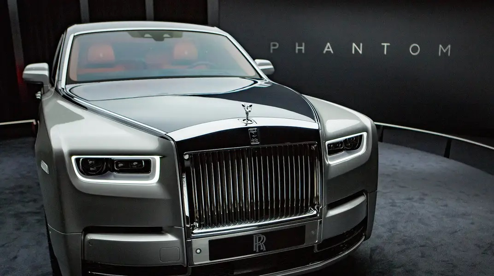

| My Top 5 Favorite Cars | ||||
|---|---|---|---|---|
 |
 |
 |  |
|
| Ford Ranger "Raptor" One of my dream Car is Ford Ranger Raptor. Ford Raptor is a nameplate used by Ford Motor Company on "high-performance" pickup trucks. In use since the 2010 model year, the Raptor is the highest-performance version of the Ford F-150 and Ford Ranger. |
Lamborghini One of my dream Car is the supercar Lamborghini Aventador. Automobili Lamborghini S.p.A. is an Italian brand and manufacturer of luxury sports cars and SUVs based in Sant'Agata Bolognese. The company is owned by the Volkswagen Group through its subsidiary Audi. |
Rols Royce Phantom One of my dream Car is the Rols Royce Phantom. Rolls-Royce Holdings plc is a British multinational engineering company incorporated in February 2011 that owns Rolls-Royce, a business established in 1904 which today designs, manufactures and distributes power systems for aviation and other industries. |
Tesla Model X One of my dream Car is the Tesla Model X. Tesla, Inc. is an American electric vehicle and clean energy company based in Palo Alto, California. Tesla's current products include electric cars, battery energy storage from home to grid scale, solar panels and solar roof tiles, and related products and services. |
Land Rover One of my dream car is the Land Rover Autobiography 4. Land Rover is a British brand of predominantly four-wheel drive, off-road capable vehicles, that is owned by multinational car manufacturer Jaguar Land Rover, since 2008 a subsidiary of India's Tata Motors. JLR currently builds Land Rovers in Brazil, China, India, Slovakia, and the United Kingdom. |
| My Top 5 Most Admired Entrepreneurs | ||||
 |
 |
 |
 |
 |
| Elon Musk I admire Elon Musk because of his dedication and vissions.Elon Reeve Musk FRS is a business magnate, industrial designer and engineer. He is the founder, CEO, CTO and chief designer of SpaceX; early investor, CEO and product architect of Tesla, Inc.; founder of The Boring Company; co-founder of Neuralink; and co-founder and initial co-chairman of OpenAI. |
Bill Gates I admire Bill Gates because of his Intelligence when it comes to life and innovations.William Henry Gates III is an American business magnate, software developer, and philanthropist. He is best known as the co-founder of Microsoft Corporation. |
Mark Elliot Zuckerberg I admire Mark Elliot Zuckerberg because of his great innovation or great idea to make a social media app (Facebook).Mark Elliot Zuckerberg is an American media magnate, internet entrepreneur, and philanthropist. He is known for co-founding Facebook, Inc. and serves as its chairman, chief executive officer, and controlling shareholder. |
Jeff Bezos I admire Jeff Bezos because of his invention like amazon and other brands.Jeffrey Preston Bezos is an American internet entrepreneur, industrialist, media proprietor, and investor. He is best known as the founder, CEO, and president of the multi-national technology company Amazon. |
Steve Jobs Beacuse of Steve Jobs HD phones or touch screen phones were invented that's why I admire him.Steven Paul Jobs was an American business magnate, industrial designer, investor, and media proprietor. The founder po Apple Devices but he died on October 5 2011. |